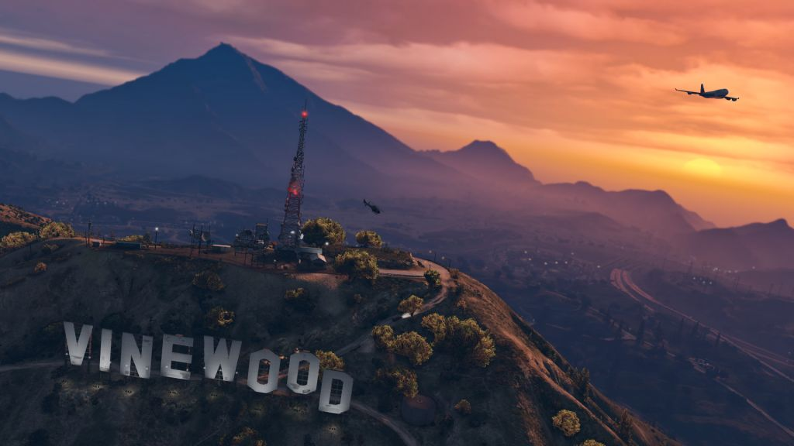

Grand Theft Auto V
De grootste blikvanger in de nieuwe update van het online component van GTA V is zonder twijfel Mamoth Mogul. Dit militaire vliegtuig bevat een turret aan de bovenkant die voor zwaar geschut zorgt. Naast dat bevat de Mogul ook propellers. Niet om te stijgen, maar om de vijand om te leggen wanneer die in de buurt is.
GTA Online update brengt nieuwe adversary mode
De nieuwe GTA Online update brengt tevens een nieuwe adversary modus naar de game, genaamd Stockpile. Deze nieuwe modus is niets meer dan een veredelde capture de flag, maar dan in de lucht met vliegtuigen die uitgerust zijn machinegeweren en andere zware wapens. Dat belooft dus een heftig spel te worden. Naast de nieuwe adversary modus en het nieuwe vliegtuig, zijn er ook tal van kortingen te krijgen na de nieuwe GTA Online update. Allerlei vliegtuigonderdelen zijn deze week 25 procent goedkoper dan normaal. Voor enkele races is er ook meer RP en geld te verdienen. GTA Online wordt, vier jaar na release, nog vrijwel elke week voorzien van nieuwe content.Lees meer..